WHAT IS PYTHON BANYAN?
Python Banyan is a lightweight, reactive framework used to create flexible, non-blocking, event driven, asynchronous applications. It was designed primarily to implement physical computing applications for devices such as the Raspberry Pi and Arduino, but it is not limited to just that domain, and may be used to create application in any domain.
Most traditional physical computing libraries or frameworks use an object oriented model that results in a single, tightly coupled, monolithic executable image. Python Banyan uses an extension of the object oriented model, called the component based model. A component based application is comprised of a set of independent, loosely coupled modules. Functionality is easily added to a Python Banyan application, and in fact it may be added to a fully running system without the need to recompile or reboot.
Because each module is a self contained entity, applications can be created with a set of modules that use different versions of Python, and in fact, you can even add modules written in other computer languages.
In addition, the modules may be run on a single computer, or may be distributed across multiple computers running different operating systems, without having to change a single line of code.
A Little More Detail
The Python Banyan Framework consists of a single, simple base class. All Banyan compatible components inherit from this class. When a Banyan component is first invoked, it automatically connects to a common shared software backplane. All of the complexity of managing connections is hidden within and handled by the base class. All Banyan modules exchange information with each another by sending or publishing user defined protocol messages via the backplane. All routing and message buffering is automatically handled by the Framework. Each Banyan component can "publish" messages, "subscribe" to receive specific messages or both publish and subscribe messages. A Banyan component is not limited as to how many types of messages it may subscribe to.
Because Banyan messages are not computer language specific, components written in other computer Languages, such as JavaScript, can be used within a Python Banyan application. A simple JavaScript demo is provided in the examples section below.
Python Banyan takes full advantage of the ZeroMQ networking library that not only provides connectivity, but in addition acts as a concurrency framework. All of this is handled transparently by the Python Banyan base class. If your application requires additional concurrency support, you are free to choose whatever works best for your application, such as a multi-threading or a Python asyncio approach. User defined messages are prepared for transport across the network by wrapping them in the Message Pack format.
The complexities of MessagePack are handled transparently by the base class, both for transmitting and receiving messages.
What's In This Guide
This is a hands-on guide. Several examples will be presented to get you acquainted with Python Banyan and its techniques for use. Source code for all examples are available on Github. Links to the source code will be provided as each component is discussed.
Chapter 1 is an introduction to developing with Python Banyan. An application tailored specifically for this purpose will be presented in detail.
In chapter 2, a demonstration of, and a discussion about creating physical computing components with Python Banyan.
To demonstrate Python Banyan's flexibility, applications will be built from Python 2 components, Python 3 components and even a JavaScript component, all cooperating and communicating with each other within a single Python Banyan application.
Python Banyan applications may be distributed across multiple computers, all without changing a single line of code. Using the components created in this guide, all of the components will first be launched to run on a Raspberry Pi, and then then the components will be re-distributed across a Linux Ubuntu PC, a Windows PC and the Raspberry Pi without having to change a single line of code.
In Chapter 3, we will add components to control an 8x8 bicolor LED matrix connected to a Raspberry Pi. A demonstration of using Python Banyan to control an i2c device will be presented.
If you need to control multiple i2c devices sharing the same i2c pins, Python Banyan provides the concurrency support for you to do so.
Chapter 4 will discuss how to use Python's setup tools to convert a Banyan component into an executable file and have it automatically installed on the execution path.
Before We Begin
To learn how to install Python Banyan, and all of the examples presented in this guide, please see the Required Additional Software section in this guide.
After following the installation instructions all of the example components are installed as executable modules.
CHAPTER 1: A SIMPLE 24 HOUR CLOCK
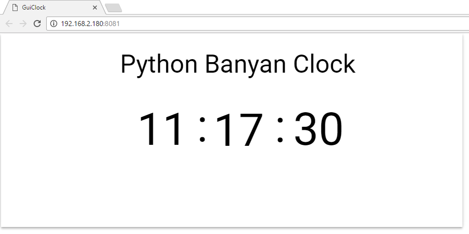
In this example, we will:
- Learn about the Python Banyan Backplane.
- Take a brief look at the Banyan base class, banyan_base.py
- Create the three components that make up this application
- Learn how to use the Python Banyan Monitor utility to test each component.
- Create a Web based Python Banyan compatible GUI using the remi library.
- Launching the components to form the application.
The Python Banyan Backplane
The backplane is installed as an executable module when Python Banyan is installed. The backplane must be running before the first Python Banyan application component is invoked.
To start the backplane, just open a command window and type:
backplane
You should see a welcome banner in the console.
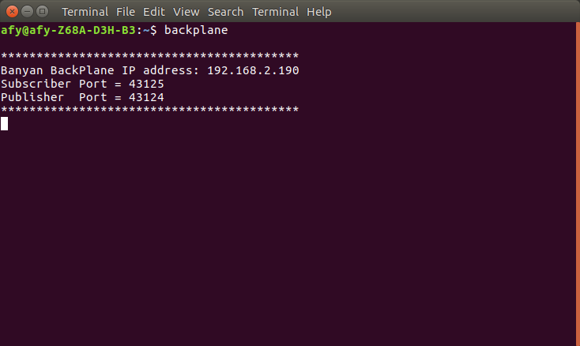
The banner identifies the name of the program, "Banyan Backplane", the IP address of the computer on which the backplane is running, and the two IP port numbers to be used by all Python Banyan components. For applications where all of the Python Banyan components are running on a single computer, this is purely informational. We will use these values in a later example when we distribute the Banyan components across multiple computers.
The backplane is an implementation of a ZeroMQ forwarder device.
A forwarder device collects messages from a set of publishers and forwards these messages to a set of subscribers. This allows all Python Banyan components to use a single IP address in conjunction with a set of well known port numbers to send and receive messages.
This simplifies system configuration and no configuration files need to be maintained.
The backplane is invoked using a common coding pattern. Although not required, it is good practice to be used by all Python Banyan components. This pattern is used to create and install Banyan modules as an executable on the executable path. We will learn more about this in Chapter 4.
For the backplane, the bp() function near the end of the file, instantiates the BackPlane class. It calls the run_back_plane method to start the backplane, and additionally attaches a Control-C signal handler so that the user can cleanly quit the program.
def bp():
"""
Instantiate the backplane and run it.
Attach a signal handler for the process to listen for user pressing Control C
:return:
"""
backplane = BackPlane()
backplane.run_back_plane()
# signal handler function called when Control-C occurs
# noinspection PyShadowingNames,PyUnusedLocal
def signal_handler(signal, frame):
print('Control-C detected. See you soon.')
backplane.clean_up()
sys.exit(0)
# listen for SIGINT
signal.signal(signal.SIGINT, signal_handler)
signal.signal(signal.SIGTERM, signal_handler)
if __name__ == '__main__':
bp()
A Brief Look At The The Banyan Base Class
Every Python Banyan component must inherit from this class. Using a derived class called MyComponent as an example, here is a pattern as to how the MyComponent class would begin.
import argparse
import signal
import sys
import time
import zmq
import umsgpack
from python_banyan.banyan_base import BanyanBase
class MyComponent(BanyanBase):
"""
All the MyComponent class methods and overwritten BanyanBase methods would follow
below this point ...
"""
The banyan_base class contains 6 methods:
1. __init__
__init__(self, back_plane_ip_address=None, subscriber_port='43125', publisher_port='43124',
process_name='None', loop_time=0.1)
The __init__ method sets up all the ZeroMQ "plumbing"
:param back_plane_ip_address: banyan_base back_planeIP Address -
if not specified, it will be set to the
local computer
:param subscriber_port: banyan_base back plane subscriber port.
This must match that of the banyan_base backplane
:param publisher_port: banyan_base back plane publisher port.
This must match that of the banyan_base backplane
:param process_name: Component identifier
:param loop_time: loop sleep time when no message is available
:return: No Return Value
This method establishes the connections to the Python Banyan Backplane. A derived class must initialize the parent class by using the super() method.
super().__init__(back_plane_ip_address, subscriber_port, publisher_port,
process_name=process_name, loop_time=loop_time)
Any component specific initialization code is added as necessary.
2. set_subscriber_topic
set_subscriber_topic(self, topic)
This method registers a component to receive messages
containing the specified topic.
You can subscribe to multiple topics by calling this method for
each topic.
:param topic: A topic string
:return: No Return Value
All Python Banyan messages are published with an associated topic string. In order to receive messages published for a given topic, a component must register for those messages by calling set_subscriber_topic. This method is called for each topic that the component wishes to receive.
This method encapsulates and hides the details of the ZeroMQ subscription process.
This method is typically not overwritten.
3. publish_payload
publish_payload(self, payload, topic='')
This method will publish a python_banyan payload and its associated topic
:param payload: Message data, typically in the form of a Python dicationary.
:param topic: A string value
:return: No Return value
Messages are published as multi-part messages consisting of a topic in the form of a string, and the payload, which is normally represented as a Python dictionary.
This method publishes a message by wrapping the payload in the MessagePack transport format and presenting both the the payload and topic to the low level ZeroMQ publish method.
This method encapsulates and hides the details of the ZeroMQ publishing process.
This method is typically not overwritten.
4. receive_loop
receive_loop(self)
This is loops wait to receive any incoming messages.
This method may be overwritten to meet the needs
of the application before handling received messages.
:return: This method never returns.
Subscribed messages are received in this non-blocking event loop.
The receive_loop continually checks to see if ZeroMQ has delivered a message. If no message is available, ZeroMQ throws a zmq.error.Again exception. When this exception occurs, the exception handler sets a short sleep interval, and then checks again. If a message is available, this method calls the incoming_message_processing method. The default value for the sleep delay is 0.1 seconds, but this value may be changed by setting the loop_time parameter in __init__.
5. incoming_message_processing
incoming_message_processing(self, topic, payload)
Override this method with a custom python_banyan message
processor for subscribed messages
:param topic: Message Topic string
:param payload: Message Data
:return: No Return Value
This method is called by the receive_loop method for each message received. The message topic and payload are passed to this method for processing.
This method must be overwritten to process the incoming messages.
6. clean_up
clean_up(self)
Clean up before exiting - override if additional cleanup is necessary
:return: No Return Value
This method attempts to cleanly shutdown a Python Banyan component. Any additional clean up for your component may be placed in this method.
Designing For Python Banyan
The first step in designing a Python Banyan application is to define the feature set for the application. An application may contain a single feature, such as in the first example we will cover, or it may contain many features, such as the control and monitoring of a robotic vehicle.
Features are comprised of individual Python Banyan components.
Features should be designed to be as independent from other features as possible, and the components that comprise the feature, should implement very targeted and specific behavior.
For example, a robot vehicle is likely to require motor control for speed and direction, and when the motors are turning, wheel encoder telemetry may be generated.
One might think to combine both the motor control and encoder processing into a single feature, but it is probably best to think of these as 2 separate features. The reason being, if you keep them separate you can reuse both features in different scenarios without having to have one component carry the baggage of the other.
Once deciding upon a set of features, we need to go one level further deeper in decomposition, and that is to define our components.
Our initial clock demo is a rather simple one, so there is only a single feature - display the current time on a Web page.
For the clock demo, the feature can be broken down into three components. we will build three components as described below:
-
A one second "tick" event generator. This component will publish a "tick event" message once every second. The message is consistent with all other Python Banyan messages. It would be advantageous if this component could optionally set the tick period to be something other than one second so that testing can be accelerated, and so that the component could be reused in other features.
-
A tick processor. This component subscribes to the "tick event" messages generated by the tick generator. It accumulates these ticks to form the current time in seconds, minutes, and hours. Each unit is handled as a separate entity. When a tick message is received, a seconds accumulator is incremented and tested to see if the seconds have reached a value of 60. If so the second accumulator is reset to 0, the minutes accumulator is incremented and an update message for the minutes is published. If the accumulated seconds is less than 60, only an update message for seconds is published. The processing of hours is handled in a very similar fashion.
-
The clock GUI. The GUI is a Web page display. It subscribes to and receives second_update, minute_update and hour_update messages. When one of these messages is received, the display for that category is updated to the value in the message.
Now that we described what each component will do, it is time to design the messaging protocol for each component. UML sequence diagrams can be helpful to capture the messaging design.
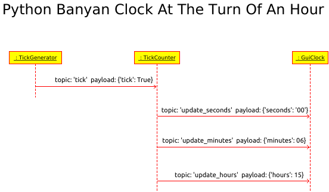
This diagram captures what happens when the TickCounter receives a tick message. The current time had been 14:59:59. Because each of the time units needs to be advanced, a message for each unit type is generated and sent to the GUI. If a unit does not need to be advanced, no message is sent for that unit.
The sequence diagram shows the message originator and a sample of the message contents. So for example, a message with a topic of "update_minutes" is being sent to the GUI with a payload of {"minutes: '06'}. By using a Python dictionary as the payload, the receiving class can easily dereference the contents of the payload.
Implementing The Tick Generator Component
Now that we have our component and interface design complete, we may proceed to implement the design. For this example, we will be running all components on a single computer. This application has been tested on a Raspberry Pi running Raspbian, on a desktop computer running Ubuntu 16.10, and on a Windows 10 computer.
# tick_generator.py
from __future__ import absolute_import
import argparse
import signal
import sys
import time
try:
from python_banyan.banyan_base import BanyanBase
except ImportError:
from python_banyan import BanyanBase
class TickGenerator(BanyanBase):
"""
This class will publish a "tick" message on a periodic basis. The period default
is 1 seconds, but may be set by the tick_duration_time parameter
"""
def __init__(self, back_plane_ip_address=None, subscriber_port='43125',
publisher_port='43124',
process_name='None', loop_time=.1, tick_duration_time=1.0, ):
"""
:param back_plane_ip_address:
:param subscriber_port:
:param publisher_port:
:param process_name:
:param loop_time:
:param tick_duration_time:
"""
# initialize the base class
super(TickGenerator, self).__init__(back_plane_ip_address, subscriber_port, publisher_port,
process_name=process_name,
loop_time=loop_time)
# allow time for ZeroMQ connections to form
time.sleep(.03)
def tick_generator():
parser = argparse.ArgumentParser()
parser.add_argument("-b", dest="back_plane_ip_address", default="None",
help="None or IP address used by Back Plane")
parser.add_argument("-d", dest="tick_duration_time", default="1.0",
help="Set tick duration time")
parser.add_argument("-n", dest="process_name", default="Local Tick_Generator", help="Set process name in banner")
parser.add_argument("-t", dest="loop_time", default=".1", help="Event Loop Timer in seconds")
args = parser.parse_args()
kw_options = {}
if args.back_plane_ip_address != 'None':
kw_options['back_plane_ip_address'] = args.back_plane_ip_address
kw_options['process_name'] = args.process_name
kw_options['loop_time'] = float(args.loop_time)
kw_options['tick_duration_time'] = float(args.tick_duration_time)
my_tick_gen = TickGenerator(**kw_options)
# signal handler function called when Control-C occurs
# noinspection PyShadowingNames,PyUnusedLocal,PyUnusedLocal
def signal_handler(signal, frame):
print('Control-C detected. See you soon.')
my_tick_gen.clean_up()
sys.exit(0)
# listen for SIGINT
signal.signal(signal.SIGINT, signal_handler)
signal.signal(signal.SIGTERM, signal_handler)
if __name__ == '__main__':
tick_generator()
The source for the tick generation component is shown above. This component only publishes information and does not subscribe to receive any messages. It consists of the TickGenerator class that contains a single method, __init__, which overrides the __init__ method of the base class. There is also a function named, tick_generator that is defined outside of the class. This is an instantiation function that is called by a standard Python invocation of:
if __name__ == '__main__':
Let's look at the code.
First, after importing some standard Python modules, we import the Python Banyan BaseClass. We then define the component's class inheriting BanyanBase:
import argparse
import signal
import sys
import time
from python_banyan.banyan_base import BanyanBase
class TickGenerator(BanyanBase):
Now let's look at the __init__ method.
The first thing that the __init__ method does is initialize the parent class by calling super().
def __init__(self, back_plane_ip_address=None, subscriber_port='43125',
publisher_port='43124',
process_name='None', loop_time=.1, tick_duration_time=1.0, ):
"""
:param back_plane_ip_address:
:param subscriber_port:
:param publisher_port:
:param process_name:
:param loop_time:
:param tick_duration_time:
"""
# initialize the base class
super(TickGenerator, self).__init__(back_plane_ip_address, subscriber_port,
publisher_port, process_name=process_name,
loop_time=loop_time)
# allow time for ZeroMQ connections to form
time.sleep(.03)
The signature of this derived method is similar to the parent, and all common arguments are passed to the parent when super() is called. There is an additional parameter, tick_duration_time, and this parameter allows us to optionally set the period of a tick at invocation time. This is useful both for testing purposes, and if we wish to reuse this component in some other feature.
As we shall see, this forms a pattern for all Python Banyan components. That is, a call to super() initializes the parent, and then there is a short waiting time to allow all ZeroMQ connections to be succeed. Note that the parent class handles all of the connection details of ZeroMQ and are purposefully hidden from the derived class.
The __init__ method is extended with the following code:
self.tick_duration_time = tick_duration_time
self.tick_topic = 'tick'
self.tick_payload = {'tick': True}
# This is a forever loop that publishes a tick message, once per second
while True:
try:
self.publish_payload(self.tick_payload, self.tick_topic)
time.sleep(self.tick_duration_time)
except KeyboardInterrupt:
sys.exit(0)
Variables are created and initialized. These variables save the tick duration time, and hold the message topic and payload. The code then enters a "forever" loop. This loop calls the parent method, publish_payload with the topic and payload for the tick. The method sleeps for the duration_time and then repeats.
The function outside of the class, tick_generator(), shown below, although not required, demonstrates a Python Banyan pattern to include command line arguments for the component as well as attaching a signal handler to allow a user to kill the component by pressing Control C. By combining this pattern with the if __name__ == '__main__': construct, setup.py has the capability to automatically install the module as an executable on the executable path. We will discuss this capability in Chapter 4.
The name of the component printed to the console is specified in this function by the default value for the process name.
def tick_generator():
parser = argparse.ArgumentParser()
parser.add_argument("-b", dest="back_plane_ip_address", default="None",
help="None or IP address used by Back Plane")
parser.add_argument("-d", dest="tick_duration_time", default="1.0",
help="Set tick duration time")
parser.add_argument("-n", dest="process_name", default="Local Tick_Generator",
help="Set process name in banner")
parser.add_argument("-t", dest="loop_time", default=".1", help="Event Loop Timer in seconds")
args = parser.parse_args()
kw_options = {}
if args.back_plane_ip_address != 'None':
kw_options['back_plane_ip_address'] = args.back_plane_ip_address
kw_options['process_name'] = args.process_name
kw_options['loop_time'] = float(args.loop_time)
kw_options['tick_duration_time'] = float(args.tick_duration_time)
my_tick_gen = TickGenerator(**kw_options)
# signal handler function called when Control-C occurs
# noinspection PyShadowingNames,PyUnusedLocal,PyUnusedLocal
def signal_handler(signal, frame):
print('Control-C detected. See you soon.')
my_tick_gen.clean_up()
sys.exit(0)
# listen for SIGINT
signal.signal(signal.SIGINT, signal_handler)
signal.signal(signal.SIGTERM, signal_handler)
if __name__ == '__main__':
tick_generator()
To see the available command line arguments for the component we invoke the component with a -h argument on the command line:
python3 tick_generator.py -h
usage: tick_generator.py [-h] [-b BACK_PLANE_IP_ADDRESS]
[-d TICK_DURATION_TIME] [-n PROCESS_NAME]
[-t LOOP_TIME]
optional arguments:
-h, --help show this help message and exit
-b BACK_PLANE_IP_ADDRESS
None or IP address used by Back Plane
-d TICK_DURATION_TIME
Set tick duration time
-n PROCESS_NAME Set process name in banner
-t LOOP_TIME Event Loop Timer in seconds
For the purposes of this demo, we can accept all of the defaults. The BACK_PLANE_IP_ADDRESS is used when we wish to run this component on a computer different from the computer that is running the backplane. We will see an example of this in a later demo.
The TICK_DURATION_TIME option allows us to set the period of the generated tick.
The PROCESS_NAME is an identifier that will be printed to the console when we start the component.
The LOOP_TIME allows us to modify the maximum amount of time that the Python Banyan received_loop waits before checking for the next message to arrive. We will accept the default for this component
All of the command line arguments use the Python argparse module in a standard fashion.
Executing The Tick Generator Component
Before executing the first component of a Banyan application, the backplane must already be running. When Banyan is installed, the backplane is installed as an executable on the executable path. To start the backplane, open up a command window, and type backplane.
Next, open another command window and start the component. If you installed the examples using pip, then simply open up a command window and type tick_generator.
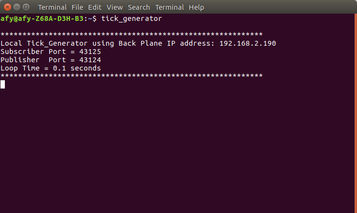
Or you if you cloned or forked the python_banyan_examples repository, go to the directory that contains tick_generator.py, and then invoke it with python3:
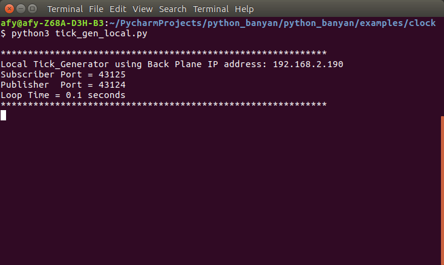
Notice that backplane address and publisher and subscriber ports match between the backplane and the tick generator. This happens automatically as result of inheriting the BanyanBase class.
Testing The Tick Generator Component - Introducing The Monitor
Now that we have the backplane and the tick generator running, let's verify that the messages being published are what we designed. With the backplane and tick_generator running, start the monitor by opening a new command window and typing:
monitor
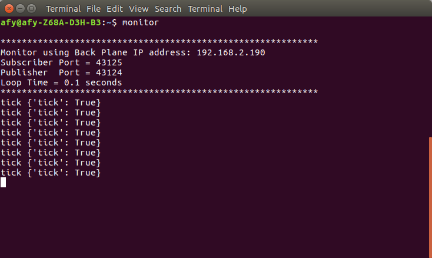
The monitor program is simply another Banyan component that can be plugged into or removed from the backplane at anytime.
We see that the topic and payload for each of the tick generator messages is displayed by the monitor.
The topic, "tick" is followed by the payload - {'tick': True}.
Let's compare this to our design:
The message matches perfectly with what we designed, we can go on to coding the next component.
If you do not see any messages on the monitor, make sure that the backplane is running. Also you may need to adjust the connection wait time in your component:
# allow time for ZeroMQ connections to form
time.sleep(.03)
Be aware that when the monitor is attached to the backplane, it may affect performance of your application since printing to the console can be quite time consuming.
Implementing The Tick Counter Component Part 1
The tick processor subscribes to 'tick' messages, accumulates the ticks, processes the ticks and publishes update messages for seconds, minutes and hours.
# tick_counter.py
import argparse
import signal
import sys
import time
import datetime
from python_banyan.banyan_base import BanyanBase
class TickCounter(BanyanBase):
"""
This class receives subscribes for tick messages
"""
def __init__(self, back_plane_ip_address=None, subscriber_port='43125',
publisher_port='43124', process_name=None, loop_time=.1):
"""
:param back_plane_ip_address:
:param subscriber_port:
:param publisher_port:
:param process_name:
"""
# initialize the base class
super().__init__(back_plane_ip_address, subscriber_port, publisher_port,
process_name=process_name, loop_time=loop_time)
# allow time for ZeroMQ connections
time.sleep(.03)
# event message from RPi
self.set_subscriber_topic('tick')
# get the current time
current_time = datetime.datetime.now().time()
# set up some unit accumulator variables
self.hours = self.prev_hour = current_time.hour
self.minutes = current_time.minute
self.seconds = current_time.second
# publish the time for all 3 accumulators
self.publish_payload({'hours': str(self.hours).zfill(2)}, 'update_hours')
self.publish_payload({'minutes': str(self.minutes).zfill(2)}, 'update_minutes')
self.publish_payload({'seconds': str(self.seconds).zfill(2)}, 'update_seconds')
# receive loop is defined in the base class
self.receive_loop()
def incoming_message_processing(self, topic, payload):
"""
This method accumulates ticks and publishes update message for the GUI
:param topic: Message Topic string
:param payload: Message Data
:return:
"""
if topic == 'tick':
self.seconds += 1
if self.seconds == 60:
current_time = datetime.datetime.now().time()
self.seconds = current_time.second
self.publish_payload({'seconds': str(self.seconds).zfill(2)},
'update_seconds')
self.hours = current_time.hour
if self.hours != self.prev_hour:
self.prev_hour = self.hours
self.publish_payload({'hours': str(self.hours).zfill(2)},
'update_hours')
if self.minutes != current_time.minute:
self.minutes = current_time.minute
self.publish_payload({'minutes': str(self.minutes).zfill(2)},
'update_minutes')
self.seconds = current_time.second
else:
self.publish_payload({'seconds': str(self.seconds).zfill(2)},
'update_seconds')
def tick_counter():
parser = argparse.ArgumentParser()
parser.add_argument("-b", dest="back_plane_ip_address", default="None",
help="None or IP address used by Back Plane")
parser.add_argument("-n", dest="process_name", default="Tick Counter",
help="Set process name in banner")
parser.add_argument("-t", dest="loop_time", default=".1",
help="Event Loop Timer in seconds")
args = parser.parse_args()
kw_options = {}
if args.back_plane_ip_address != 'None':
kw_options['back_plane_ip_address'] = args.back_plane_ip_address
kw_options['process_name'] = args.process_name
kw_options['loop_time'] = float(args.loop_time)
my_tick_counter = TickCounter(**kw_options)
# signal handler function called when Control-C occurs
# noinspection PyShadowingNames,PyUnusedLocal,PyUnusedLocal
def signal_handler(signal, frame):
print('Control-C detected. See you soon.')
my_tick_counter.clean_up()
sys.exit(0)
# listen for SIGINT
signal.signal(signal.SIGINT, signal_handler)
signal.signal(signal.SIGTERM, signal_handler)
if __name__ == '__main__':
tick_counter()
If you compare this file with the tick generator, you will notice some very similar patterns. The invoking functions at the end of each file are almost identical, so we won't be discussing those again.
As do all Python Banyan component classes, the TickCounter class inherits the BanyanBase class. The __init__ method also starts out with a standard pattern. The super() method is called and then there is a short wait time to allow for the component to connect with the backplane.
Let's look at where things begin to differ in __init__:
# event message from RPi
self.set_subscriber_topic('tick')
# get the current time
current_time = datetime.datetime.now().time()
# set up some unit accumulator variables
self.hours = self.prev_hour = current_time.hour
self.minutes = current_time.minute
self.seconds = current_time.second
# publish the time for all 3 accumulators
self.publish_payload({'hours': str(self.hours).zfill(2)}, 'update_hours')
self.publish_payload({'minutes': str(self.minutes).zfill(2)}, 'update_minutes')
self.publish_payload({'seconds': str(self.seconds).zfill(2)}, 'update_seconds')
# receive loop is defined in the base class
self.receive_loop()
The parent method, set_subscriber() is called to subscribe to receive 'tick' messages.
Then the current time is read and the time unit variables are initialized with the current time values.
When the payload is constructed, the value string for each of the accumulators is zero filled so that each value is 2 digits long with a leading zero when necessary.
The parent method, publish_payload is called for each of the unit accumulators and finally the receive_loop, defined in the parent is called, to receive incoming tick messages.
Incrementally Testing The Tick Processor Component Part 1
Since the __init__ method publishes some messages, we can run the tick_counter by itself and monitor its output to verify the messages being sent within __init__ are what we expect.
First kill the tick generator component so that we can test the the tick counter as a standalone component.
Next restart the monitor component. Notice that we did not have to restart the backplane. You can add and remove components at will.
Lastly, start the tick counter.
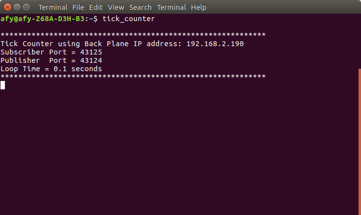
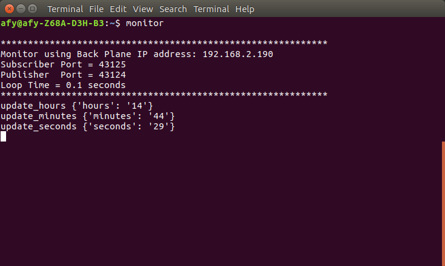
Comparing the messages with the original design, we see that they match in format. The actual payload contents reflect the time when the test was performed..
Now we can go on with the rest of the coding for the class.
Writing The Tick Counter Component Part 2
In the __init__ method, the parent method, receive_loop was called. It does not need to be changed for this example and the parent method is executed as is with no overwrite.
The receive_loop constantly checks for the arrival of new messages. When a message has arrived, receive_loop calls the incoming_message_processing method. The parent version of this method is essentially a place holder so we need to overwrite this method to process the message.
def incoming_message_processing(self, topic, payload):
"""
This method accumulates ticks and publishes update message for the GUI
:param topic: Message Topic string
:param payload: Message Data
:return:
"""
if topic == 'tick':
self.seconds += 1
if self.seconds == 60:
current_time = datetime.datetime.now().time()
self.seconds = current_time.second
self.publish_payload({'seconds': str(self.seconds).zfill(2)},
'update_seconds')
self.hours = current_time.hour
if self.hours != self.prev_hour:
self.prev_hour = self.hours
self.publish_payload({'hours': str(self.hours).zfill(2)},
'update_hours')
if self.minutes != current_time.minute:
self.minutes = current_time.minute
self.publish_payload({'minutes': str(self.minutes).zfill(2)},
'update_minutes')
self.seconds = current_time.second
else:
self.publish_payload({'seconds': str(self.seconds).zfill(2)},
'update_seconds')
When a tick message is received, this method increments the seconds accumulator and tests for a value of 60. If it is 60, the seconds need to be reset to 0, and the minutes incremented by 1. Then the code tests if the new minute cascades into a new hour and updates the hour accumulator appropriately.
For each of the accumulators, if an accumulator value changes, a message is published for that accumulator.
Incrementally Testing The Tick Processor Component Part 2
Leaving the monitor and tick counter running, start the tick generator in a new command window.
Because the monitor prints all messages, we see a tick message followed by an update_seconds message. When the seconds are currently at 59 and the next tick is received, the seconds are reset to zero immediately followed by an update_minutes message. If the hour had turned, a third message indicating this would have been published.
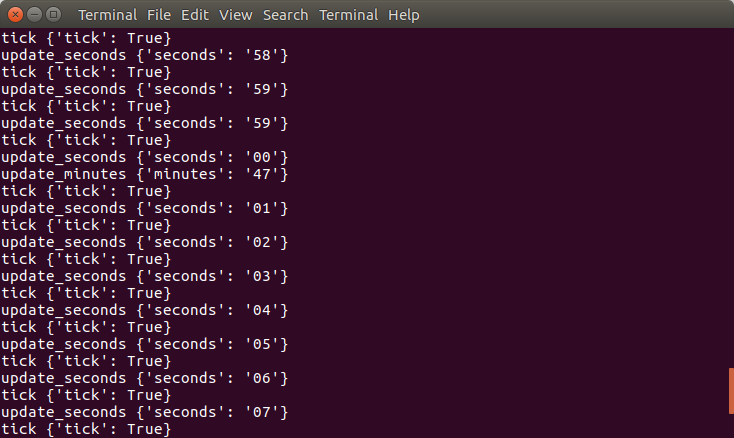
To test the turning of an hour, you can either wait, or when you start tick_generator.py you can modify the tick period to be a much shorter tick period by using the -d command line option.
Integrating a GUI With Python Banyan
When creating a GUI for your application, Python offers many GUI libraries to choose from. When choosing a GUI, you will need to integrate the GUI library's event loop with the Banyan event loop. Python Banyan compatible applications have been successfully integrated with the tkinter, kivy, and remi
The remi library, in my opinion, has an advantage over every other Python GUI library. That is, it creates a Web based GUI totally written in Python. You get all the advantages of having a Web based GUI, such as portability, without having to deal with HTML/CSS/JavaScript.
With remi you have the choice of implementing your GUI by writing code to access the remi APIs directly or have remi generate the code for you. Remi includes a What You See Is What You Get (WYSIWYG) editor. There is a preliminary tutorial that demonstrates how easy the graphical editor is to use. The editor not only allows you to visually layout your GUI, but generates the code that will both launch an HTTP server and then display your Web page on your default browser. If you want to access your GUI from a remote device, such as a phone or tablet - no problem, remi allows multiple connections to the Web server.
Another great advantage of using remi to generate the code, is that it not only saves coding time, but testing time as well.
For this demo project, we used the WYSIWYG editor to generate the GUI.
A more complicated GUI was designed and implemented using the editor and is included with code in the Python Banyan Examples repository for the robot example
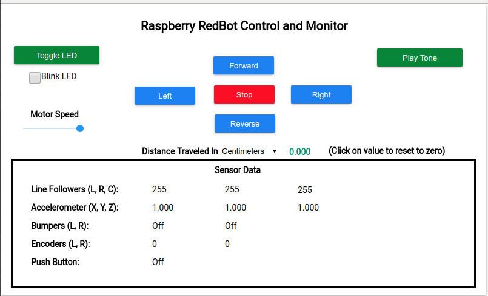
Integrating remi Generated Code With Python Banyan
To turn the generated code into a Banyan component, we need to perform several coding steps. A "before" and "after" snapshot of the code will be displayed for each step along the way, in addition to some explanatory text.
1.Add imports, rename the class, and add Python Banyan specific variables to the generated GUI class.
Unmodified Generated Code
import remi.gui as gui
from remi.gui import *
from remi import start, App
class untitled(App):
def __init__(self, *args, **kwargs):
if not 'editing_mode' in kwargs.keys():
super(untitled, self).__init__(*args, static_file_path='./res/')
Modified Code
import sys
import socket
import signal
import zmq
import umsgpack
import remi.gui as gui
from remi.gui import *
from remi import start, App
class GuiClock(App):
# ZeroMQ backplane address
back_plane_ip_address = None
#ZeroMQ backplane ports
subscriber_port = '43125'
publisher_port = '43124'
# ip address where the remi server is running
gui_ip_address = None
# ZeroMQ connections
publisher = None
subscriber = None
# topics that this application wishes to subscribe to
subscriber_topics = ['update_seconds', 'update_minutes', 'update_hours']
# The ZeroMQ context
context = None
def __init__(self, *args, **kwargs):
if not 'editing_mode' in kwargs.keys():
super(GuiClock, self).__init__(*args, static_file_path='./res/')
For this step we added some additional module imports, renamed the class and added some class level variables. In addition, a list of subscription topics is created.
The __init__ method for this example did not need to be modified.
2. Overwrite the remi idle() method to incorporate the Python Banyan event loop functionality.
Unmodified Generated Code
def idle(self):
#idle function called every update cycle
pass
Modified Code
def idle(self):
# idle function called every update cycle
data = None
try:
data = self.subscriber.recv_multipart(zmq.NOBLOCK)
self.incoming_message_processing(data[0].decode(), umsgpack.unpackb(data[1]))
except zmq.error.Again:
pass
except KeyboardInterrupt:
self.clean_up()
The idle method gets called at a user settable rate (more about that later). Here, we added code from the BanyanBase class that looks very similar and acts as the Banyan receive_loop(). When a message is received, this method will call the incoming_message_processing method, the same as is done in BanyanBase.
3. Modify the remi main() method to connect publisher and subscriber sockets to the Python Banyan backplane.
Unmodified Generated Code
def main(self):
return untitled.construct_ui(self)
Modified Code
def main(self):
print('\n************************************************************')
print('Clock GUI using Back Plane IP address: ' + self.back_plane_ip_address)
print('GUI IP Address = ' + self.gui_ip_address)
print('Subscriber Port = ' + self.subscriber_port)
print('Publisher Port = ' + self.publisher_port)
print('************************************************************')
self.context = zmq.Context()
# noinspection PyUnresolvedReferences
self.subscriber = self.context.socket(zmq.SUB)
for topic in self.subscriber_topics:
self.subscriber.setsockopt(zmq.SUBSCRIBE, topic.encode())
#
connect_string = "tcp://" + GuiClock.back_plane_ip_address +
':' + self.subscriber_port
self.subscriber.connect(connect_string)
#
# noinspection PyUnresolvedReferences
GuiClock.publisher = self.context.socket(zmq.PUB)
connect_string = "tcp://" + GuiClock.back_plane_ip_address +
':' + self.publisher_port
self.publisher.connect(connect_string)
the_gui = GuiClock.construct_ui(self)
# alias to help access widgets directly
GuiClock.the_widgets = self.clock_top_panel.children
return the_gui
This code looks and acts very similarly to the BanyanBase __init__ method. It instantiates ZeroMQ, creates the connections to the backplane, and calls the generated construct_ui() method. This method instantiates all of the widgets.
In addition, all of the topics in the list of subscriber topics are registered.
We also added and initialized a variable called the_widgets that is used as a handle to gain access to and manipulate the generated widgets.
4. Add a new method to remi class to process incoming messages that have been subscribed to.
def incoming_message_processing(self, topic, payload):
"""
:param topic: Message Topic string
:param payload: Message Data
:return:
"""
if topic == 'update_seconds':
self.the_widgets['label_seconds'].set_text(payload['seconds'])
elif topic == 'update_minutes':
self.the_widgets['label_minutes'].set_text(payload['minutes'])
elif topic == 'update_hours':
self.the_widgets['label_hours'].set_text(payload['hours'])
This is the method that dereferences and processes the incoming messages that the GUI subscribed to. Here we are updating the label widgets for seconds, minutes and hours.
5. Add a new method to publish Python Banyan compatible messages.
def publish_payload(self, payload, topic=''):
"""
This method will publish python_banyan payload with the specified topic.
:param payload: A dictionary of items
:param topic: A string value
:return:
"""
if not type(topic) is str:
raise TypeError('Publish topic must be python_banyan string', 'topic')
# create python_banyan message pack payload
message = umsgpack.packb(payload)
pub_envelope = topic.encode()
self.publisher.send_multipart([pub_envelope, message])
This method prepares and publishes a message to the Banyan backplane.
6. Add a clean_up method to cleanly take down Python Banyan connections and to close ZeroMQ
def clean_up(self):
"""
Clean up before exiting - override if additional cleanup is necessary
:return:
"""
self.publisher.close()
self.subscriber.close()
self.context.term()
This method closes the ZeroMQ connections and terminates the ZeroMQ instance.
7. Create A Modified Instantiation Function
Unmodified Generated Code
#Configuration
configuration = {'config_enable_file_cache': True, 'config_start_browser': True, 'config_address': '0.0.0.0',
'config_project_name': 'untitled', 'config_port': 8081, 'config_resourcepath': './res/',
'config_multiple_instance': True}
if __name__ == "__main__":
# start(MyApp,address='127.0.0.1', port=8081, multiple_instance=False,enable_file_cache=True,
update_interval=0.1, start_browser=True)
start(untitled, address=configuration['config_address'], port=configuration['config_port'],
multiple_instance=configuration['config_multiple_instance'],
enable_file_cache=configuration['config_enable_file_cache'],
start_browser=configuration['config_start_browser'])
Modified Code
def clock_gui():
s = socket.socket(socket.AF_INET, socket.SOCK_DGRAM)
# use the google dns
s.connect(('8.8.8.8', 0))
GuiClock.gui_ip_address = s.getsockname()[0]
# test if user wants to specify the backplane address
if len(sys.argv) > 1:
GuiClock.back_plane_ip_address = sys.argv[1]
# argument, so just use the local host
else:
GuiClock.back_plane_ip_address = s.getsockname()[0]
# signal handler function called when Control-C occurs
# noinspection PyShadowingNames,PyUnusedLocal,PyUnusedLocal
def signal_handler(signal, frame):
print('Control-C detected. See you soon.')
sys.exit(0)
# listen for SIGINT
signal.signal(signal.SIGINT, signal_handler)
signal.signal(signal.SIGTERM, signal_handler)
start(GuiClock, debug=False, address=GuiClock.gui_ip_address,
update_interval=.00001)
if __name__ == "__main__":
clock_gui()
This method sets the IP address of the remi HTTP server to be the IP address of the invoking machine.
It checks to see if there was a command line argument provided to set the backplane IP address. If not, it uses the address of the local machine.
Signal handlers are attached to detect the user terminating the component.
The remi start() method is called passing the name of the GUI class, turning debugs off, the address to use for the HTTP server and finally the update_interval for the idle loop.
Testing the Application
Now that we have all of our components for this application written, we can start the GUI to perform end to end testing.
To start the application:
- Start the backplane.
- Start the GUI.
- Start the tick processor.
- Start the tick generator.
Component Startup Order
Does the order that we start our components matter? That depends upon the application and how we designed the application. For our example, it turns out it does. If the GUI is started last, most likely you will only see the seconds display, that is until there is a turn of an hour. To fix this behavior, the GUI could publish a message, and the tick processor can subscribe to this message. The message would request that the full current time be published.
The installed example code, as well as the code published on Github, was modified to do just that.
The __init__ method in gui_clock.py was modified to publish a message requesting the current time. The message contains the topic: 'update_me' and a payload of: {'first': 'a'}.
Because this is in the __init__ method, this message is only published once, when the class is instantiated.
class GuiClock(App):
back_plane_ip_address = None
gui_ip_address = None
publisher = None
subscriber = None
subscriber_port = '43125'
publisher_port = '43124'
subscriber_topics = ['update_seconds', 'update_minutes', 'update_hours']
context = None
default_button_color = '#1d81f1'
def __init__(self, *args, **kwargs):
if not 'editing_mode' in kwargs.keys():
super(GuiClock, self).__init__(*args, static_file_path='./res/')
# request for time to be updated
self.publish_payload({'first': 'a'}, 'update_me')
The tick_counter, was modified to subscribe to the 'update_me' topic and when it receives an 'update_me' message, it returns messages for all three time units. The incoming_message_processing method for tick_counter.py is shown below.
def incoming_message_processing(self, topic, payload):
"""
This method accumulates ticks and publishes update message for the GUI
:param topic: Message Topic string
:param payload: Message Data
:return:
"""
if topic == 'tick':
self.seconds += 1
if self.seconds == 60:
current_time = datetime.datetime.now().time()
self.seconds = current_time.second
self.publish_payload({'seconds': str(self.seconds).zfill(2)}, 'update_seconds')
self.hours = current_time.hour
if self.hours != self.prev_hour:
self.prev_hour = self.hours
self.publish_payload({'hours': str(self.hours).zfill(2)}, 'update_hours')
if self.minutes != current_time.minute:
self.minutes = current_time.minute
self.publish_payload({'minutes': str(self.minutes).zfill(2)}, 'update_minutes')
self.seconds = current_time.second
else:
self.publish_payload({'seconds': str(self.seconds).zfill(2)}, 'update_seconds')
elif topic == 'update_me':
# current_time = datetime.datetime.now().time()
self.publish_payload({'hours': str(self.hours).zfill(2)}, 'update_hours')
self.publish_payload({'minutes': str(self.minutes).zfill(2)}, 'update_minutes')
self.publish_payload({'seconds': str(self.seconds).zfill(2)}, 'update_seconds')
Back to testing. Because we have tested our messaging interface all along the way, we only need to concentrate on verifying that the GUI is displaying the time units correctly. Using remi to generate the GUI code also made testing simpler since we bypassed hand coding widget creation, instantiation and testing the results.
Your default web browser should open and the time should be displayed, being updated every second.
Component Launch Strategies
For a small application with only a few components, it is not difficult to open a separate command or shell window for each component. For larger applications, this quickly becomes unmanageable. Here are some strategies that simplify the launching of an application using a single command.
Windows
For windows, create a .bat file to launch all of the components. Here is the contents of a file named clock.bat that will launch all of the clock demo components in separate command windows.
start backplane.exe
start tick_generator.exe
start tick_counter.exe
start clock_gui.exe
Mac
For the Mac, you can create a shell script that will launch the components and when Control C is pressed, will kill all of the components.
The launching file should contain a ".sh" extension, and you should change the files permissions to be executable. Here is a sample shell script to launch the clock demo named clock_demo.sh:
#!/bin/bash
echo 'Press Control C to kill all of the components.'
xterm -e backplane &
xterm -e clock_gui &
xterm -e tick_counter &
xterm -e tick_generator
function finish {
killall backplane
killall clock_gui
killall tick_counter
killall tic_generator
}
trap 'kill $(jobs -p)' SIGINT
To make this file executable after it is created, use:
chmod ugo+x clock_demo.sh
Then to run the script type:
./clock_demo.sh
Linux
For Linux, you may use the same shell script shown above for the Mac, or you can use a utility called Lunch. To install lunch on Ubuntu or the Raspberry Pi, open a command window and type:
sudo apt-get install python-lunch
The Lunch utility uses a configuration file, called .lunchrc to launch the components. If you installed the examples onto your computer using pip or setup.py, you can automatically create the .lunchrc file for the clock demo by opening a command window and typing:
lunch_config
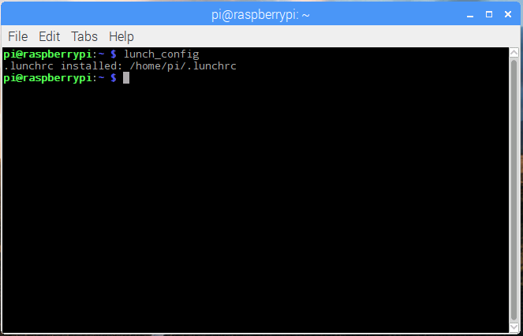
A .lunchrc file will installed in your home directory, which is where lunch expects to find the file.
Here is the contents of that file:
add_command(command="backplane", env={}, identifier="back_plane")
add_command(command="tick_generator", env={}, identifier="tick_generator")
add_command(command="tick_counter", env={}, identifier="tick_counter")
add_command(command="clock_gui", env={}, identifier="clock_gui")
Each line adds a command for lunch to execute. The "command" parameter is the name of the executable to launch, the "env" is unused for our purposes and left as {}, and the "identifier" parameter allows us to pick a name of our choosing.
Note that if you execute the lunch_config program again, it will overwrite any changes you may have made to the .lunchrc file, so you may wish to backup this file before running lunch_config.
Lunch installs a menu item with a cherry as its icon.
On Raspbian, after installing lunch, you will find it under the System Tools menu on the GUI.
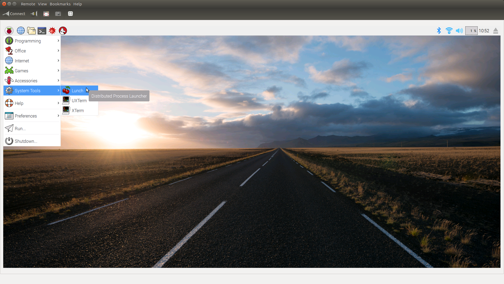
When you invoke lunch from the GUI, you will see window that looks something like this:
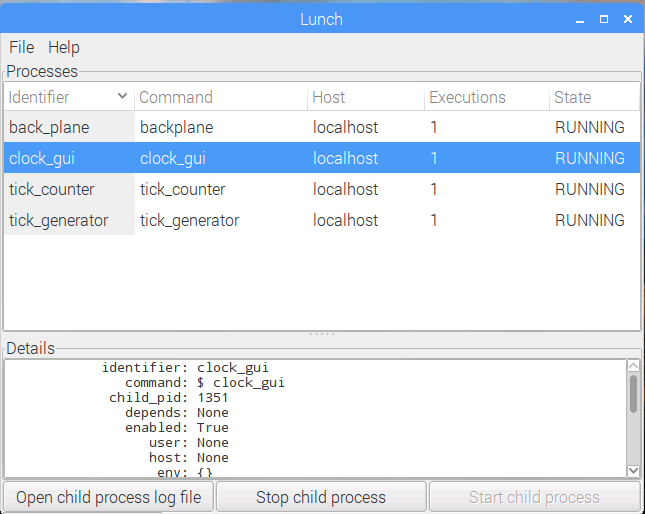
If lunch fails to be able to start a process, it will constantly retry, until it succeeds.
Through the lunch gui, you can start and stop individual components, and view their console output.
When you exit the lunch GUI window, all launched components will exit.
CHAPTER 2: PHYSICAL COMPUTING - GPIO INTERFACING
Now that we know the basics of programming with Python Banyan, let's move on to creating a Python Banyan application to control the digital output pins for both a Raspberry Pi and an Arduino.
In this chapter, the application requirements will be stated, and a typical "use case" will be provided. Previously, we used a sequence diagram to help capture the design. A descriptive text approach will be used for this chapter as a contrast with the sequence diagram approach.
The examples will be executed on a Raspberry Pi.
Application Requirements
- The application shall allow a user to toggle one or more digital output pins (simultaneously) on the target device (Arduino or Raspberry Pi)
- The user shall be able to set the toggle rate when the application begins.
- Other than the component that controls the board specific GPIO interface, a common, non-hardware specific code set, shall be implemented to control the Arduino and Raspberry Pi, simultaneously or singularly.
Use Case
A potential use case is to have the ability to toggle a light source and a video camera, on and off simultaneously. The camera and light source may be attached to a single or multiple Raspberry Pi modules or a Raspberry Pi and an Arduino.
Simulation Application
For the purposes of this demo application, the camera and light source are simulated by using discrete LEDs in their place.
Component High Level Design
When designing a component, a separation of concerns should always be the goal. In this example, all the components are designed with a specific purpose in mind. This not only makes testing easier, but promotes component reuse for future projects.
Instead of using a sequence diagram to capture our design, we will be using a text based approach.
Our design will consist of three components. The first is an event generator that is a reuse of the tick generator created in chapter 1. The second component is a "toggler" component that will interpret the events of the tick generator and translate those events into "toggle" messages. Both of these components are hardware independent. The third component will translate the "toggle" messages into actions that directly control the GPIO pins of either the Raspberry Pi or Arduino. There will be two implementation versions for this component. One for the Raspberry PI, using pigpio library, and for the Arduino, the PyMata library
Here is the design for each component.
-
An event generator component that will trigger the toggling of the pin state.
- Reuse the tick_generator created for chapter 1.
- Subscribes to:
- Does not subscribe to any messages.
- Messages Published:
- topic: 'tick'
- payload: {'tick': True}
-
A "toggler" component. This will keep track of the last state change and send a message to toggle to the opposite state.
- A new component.
- Subscribes to:
- 'tick' topic
- Messages Published:
- topic: 'digital_output'
- payload: {'command': 'set_state', 'state': 0 or 1}
-
Separate GPIO interface components for the Arduino and for the Raspberry Pi. These components translate the digital_output topic messages into GPIO library commands.
- A new component.
- Subscribes to:
- 'digital_output' topic - translates the messages into low-level, board specific GPIO control methods.
- Messages Published:
- None.
Component Implementation
tick_generator
This component is reused from chapter 1 and is described here
toggler
This component is very similar in form to all the other components discussed in chapter 1. The class definition is shown below, and the comments in the code adequately describe its contents.
The standard Python Banyan component instantiation scheme as discussed here is used as well.
# toggler.py
import sys
import signal
import argparse
import time
from python_banyan.banyan_base import BanyanBase
class Toggler(BanyanBase):
"""
This class is a subscriber for "tick" messages. When a tick message is received,
it will togglea state variable and then publish a digital_output message with
a payload reflecting the current state.
It is independent of any specific hardware platform.
"""
def __init__(self, back_plane_ip_address=None, subscriber_port='43125',
publisher_port='43124', process_name=None, loop_time=.1):
"""
:param back_plane_ip_address:
:param subscriber_port:
:param publisher_port:
:param process_name:
:param loop_time:
"""
# initialize the parent
super().__init__(back_plane_ip_address, subscriber_port, publisher_port,
process_name=process_name, loop_time=loop_time)
# allow time for zmq connections to be established
time.sleep(.03)
# subscribe to topics
self.set_subscriber_topic('tick')
# last digital output state
self.tick_tock = 0
self.receive_loop()
def incoming_message_processing(self, topic, payload):
"""
This method will toggle the tick_tock state with each incoming tick.
It will then publish the new state as a digital_output topic message
:param topic: Message Topic string
:param payload: Message Data
:return:
"""
if topic == 'tick':
self.tick_tock ^= 1
payload = {'command': 'set_state', 'state': self.tick_tock}
self.publish_payload(payload, 'digital_output', )
Testing toggler.py
- Start the backplane.
- start tick_generator.
- start the monitor.
- start the toggler.
As you can see below with each tick, the toggler changes the state in the published digital_output message, and meets our design.
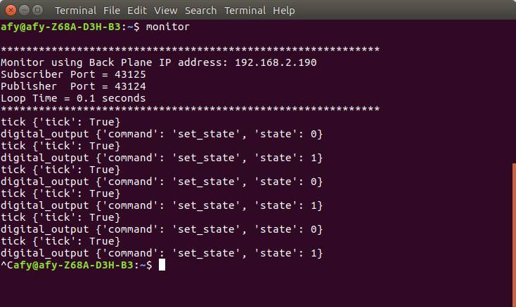
rpi_digital_out
Once again, the familiar Python Banyan class definition patterns emerge. Let's take a look at what is new.
import argparse
import signal
import sys
import time
import pigpio
# noinspection PyUnresolvedReferences
from python_banyan.banyan_base import BanyanBase
class RPiDigitalOut(BanyanBase):
"""
This class is the interface class for Raspberry Pi digital
output control using the pigpio library.
It is used to set BCM pins as digital outputs and to set their states.
"""
def __init__(self, pins, back_plane_ip_address=None, subscriber_port='43125',
publisher_port='43124', process_name=None):
"""
Initialize the BanyanBase parent object.
Subscribe to topics of interest.
Create an instance of pigpio
:param back_plane_ip_address:
:param subscriber_port:
:param publisher_port:
:param process_name:
"""
# initialize the base class and wait for zmq connections to complete
super().__init__(back_plane_ip_address, subscriber_port, publisher_port,
process_name=process_name)
time.sleep(.3)
# set the subscriber topic
self.set_subscriber_topic('digital_output')
# create a pigpio object
# make sure to start the pipgio daemon before starting this component
self.pi = pigpio.pi()
# save the requested list of pins that need to be controlled
self.pins = pins
# set all the pins in the list to output pins
for pin in pins:
self.pi.set_mode(pin, pigpio.OUTPUT)
# subscribe to digital_output messages
self.set_subscriber_topic('digital_output')
# start the receive loop
self.receive_loop()
The first thing to notice in the __init__ method, is the addition of the parameter 'pins'. This parameter is a list of BCM pins that we wish to toggle. The list is specified with the required -p option when the component is invoked. The format of the command line option is -p followed by the space delimited list of pins we wish to affect. The reason that this is a required option is, that unlike the Arduino, the Raspberry Pi has no built in LED.
After instantiating the pigpio library, we use the list of pins to set each pin in the list as an output pin.
We then subscribe to the 'digital_output' messages published by the toggler component, and then call the receive loop to wait for incoming messages.
def incoming_message_processing(self, topic, payload):
"""
:param topic: Message Topic string
:param payload: Message Data
:return:
"""
# set the state for all the pins in the pin list
if payload['command'] == 'set_state':
for pin in self.pins:
self.pi.write(pin, payload['state'])
else:
raise TypeError('Unknown command received')
The incoming_message_processing method sets the state of each pin in the pin list to the state specified in the payload of the message.
Next is The pi_digital_out() invocation function that uses the standard Python Banyan pattern. The only major change is the addition of the -p option. This is a required option and at least one pin must be provided.
def rpi_digital_out():
parser = argparse.ArgumentParser()
parser.add_argument("-b", dest="back_plane_ip_address", default="None",
help="None or IP address used by Back Plane")
parser.add_argument("-n", dest="process_name", default="LED Back End",
help="Set process name in banner")
parser.add_argument('-p', nargs='+', required=True, type=int, dest='pins',
help='Required - Enter a list of space delimited pin numbers')
args = parser.parse_args()
kw_options = {}
if args.back_plane_ip_address != 'None':
kw_options['back_plane_ip_address'] = args.back_plane_ip_address
kw_options['process_name'] = args.process_name
my_rpi_digital_out = RPiDigitalOut(args.pins, **kw_options)
# signal handler function called when Control-C occurs
# noinspection PyShadowingNames,PyUnusedLocal,PyUnusedLocal
def signal_handler(signal, frame):
print('Control-C detected. See you soon.')
my_rpi_digital_out.clean_up()
sys.exit(0)
# listen for SIGINT
signal.signal(signal.SIGINT, signal_handler)
signal.signal(signal.SIGTERM, signal_handler)
if __name__ == '__main__':
rpi_digital_out()
Testing rpi_digital_out
Connect an LED or LEDs to the bcm pin(s) of your choice. With the backplane,tick_generator and toggler components running, start rpi_digital_out by specifying the pins you wish to toggle You should see the LED or LEDs blink at 1 second rate.
To simplify testing, you can use a Raspberry Pi hat, such as the Pibrella, or wire one up on your own.
Using the Pibrella green LED (BCM pin 4) and yellow LED (BCM pin 17) rpi_digital_out is invoked using the -p option, with the following command line:
rpi_digital_out -p 4 17
Since we are using the pigpio library, we need to first start its daemon by executing the following command:
sudo pigpiod
Next, to simplify the application start up, the .lunchrc may be updated by adding the toggler and rpi_digital_out components.
add_command(command="backplane", env={}, identifier="back_plane")
add_command(command="tick_generator", env={}, identifier="tick_generator")
add_command(command="tick_counter", env={}, identifier="tick_counter")
add_command(command="clock_gui", env={}, identifier="clock_gui")
add_command(command="toggler", env={}, identifier="toggler")
add_command(command="rpi_digital_out -p 4 17", env={}, identifier="rpi_digial_out")
Adding An Arduino Component Into The Mix
Continuing on with the GPIO control theme, we are going to add a component that will blink the board LED connected to pin 13 on an Arduino. We will be using the PyMata control library to control pin 13 on the Arduino. This library was chosen over the newer pymata-aio library, because pymata-aio requires the use of Python 3.5 or greater. Using PyMata will allow us to continue using Python 3.4.2 that is installed with the Raspberry Pi Raspbian distribution of 2017-01-11.
To install PyMata, open up a command window on the Raspberry Pi and type:
sudo pip3 install PyMata
PyMata implements the Firmata protocol. You will need to install the StandardFirmata Arduino sketch that is included with the Arduino IDE, or the FirmataPlus sketch that comes with as part of the PyMata package. For further information on PyMata, please check out the PyMata Github page and the PyMata Wiki page.
Here is the source code for arduino_digital_out
# arduino_digital_out.py
import time
import sys
import signal
import argparse
import zmq
import umsgpack
from PyMata.pymata import PyMata
from python_banyan.banyan_base import BanyanBase
class ArduinoDigitalOut(BanyanBase):
"""
This class is the interface class for Arduino output using the
PyMata library.
It is used to set a BCM pin as a digital output and to set its state.
"""
def __init__(self, back_plane_ip_address=None, subscriber_port='43125',
publisher_port='43124', process_name=None, pins=[13],
com_port='/dev/tty_ACM0'):
super(ArduinoDigitalOut, self).__init__(back_plane_ip_address, subscriber_port,
publisher_port, process_name=process_name)
time.sleep(.3)
# initialize pin direction
self.pins = pins
self.com_port = com_port
self.board = PyMata(com_port, verbose=True)
for pin in pins:
self.board.set_pin_mode(pin, self.board.OUTPUT, self.board.DIGITAL)
self.set_subscriber_topic('digital_output')
self.receive_loop()
def incoming_message_processing(self, topic, payload):
"""
:param topic: Message Topic string
:param payload: Message Data
:return:
"""
# set the state of the pin specified in the message.
if payload['command'] == 'set_state':
for pin in self.pins:
self.board.digital_write(pin, payload['state'])
else:
raise TypeError('Unknown command received')
def arduino_digital_out():
# noinspection PyShadowingNames
parser = argparse.ArgumentParser()
parser.add_argument("-b", dest="back_plane_ip_address", default="None",
help="None or IP address used by Back Plane")
parser.add_argument("-c", dest="com_port", default="/dev/ttyACM0",
help="Enter Arduino Com Port")
parser.add_argument("-n", dest="process_name", default="Arduino Digital Output",
help="Set process name in banner")
parser.add_argument('-p', nargs='+', type=int, default=[13], dest='pins',
help='Required - Enter a list of space delimited pin numbers')
args = parser.parse_args()
kw_options = {}
if args.back_plane_ip_address != 'None':
kw_options['back_plane_ip_address'] = args.back_plane_ip_address
kw_options['process_name'] = args.process_name
kw_options['com_port'] = args.com_port
ard_dig_out = ArduinoDigitalOut(**kw_options)
# signal handler function called when Control-C occurs
# noinspection PyShadowingNames,PyUnusedLocal,PyUnusedLocal
def signal_handler(signal, frame):
print('Control-C detected. See you soon.')
ard_dig_out.clean_up()
sys.exit(0)
# listen for SIGINT
signal.signal(signal.SIGINT, signal_handler)
signal.signal(signal.SIGTERM, signal_handler)
if __name__ == '__main__':
arduino_digital_out()
The __init__ method contains a pins parameter similar to that of the rpi_digital_out component. This parameter has a default value of pin 13 for the Arduino board LED. Additional pins can be enabled by using the -p option when invoking arduino_digital_out. For arduino_digital_out the -p is not required as it is for the Raspberry Pi.
An instance of PyMata is created and the PyMata API is used to set the specified pins for digital output.
There is also a com_port parameter. The Arduino communicates over a serial interface, and the default is /dev/tty/ACMO, which is the default when we plug the Arduino USB connector into the Raspberry Pi. This value may be overwritten using the -c command line option.
The incoming_message_processing method set the state of the output pin using the PyMata API as well.
When the arduino_digital_out component is invoked from a terminal window, here is its output:
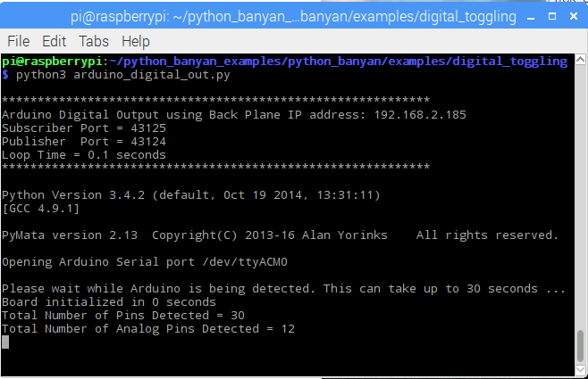
PyMata announces the com port it is using, the number of pins it found on the Arduino device. The component will then proceed to blink the Arduino LED.
And Now, For Something Totally Different - Adding A JavaScript Banyan Compatible Module To The Application
We are about to add an additional component to our already running system. This module, however is written in JavaScript. It so happens that you may write a component in any language that supports both ZeroMQ and MessagePack, and there is a very long list of languages that do. long list of languages that do. But why would you want to do something like this? Here are some reasons:
- You need support for a hardware device. The only support you can find is written in another language and porting would be difficult, if not impossible.
- You would like to perform a remote procedure call with a component written in something other than Python to perform some task, perhaps some complicated data analysis.
The flexibility of Python Banyan allows you to craft components to meet your application's needs, including doing so in a language other than Python.
The following is a simple JavaScript component. When executed using node.js, it attaches itself to the backplane and when it receives an update_seconds messages, it prints the topic and payload to the console.
// node_backplane_monitor.js
// This is a simple JavaScript monitor compatible with Python Banyan.
// It subscribes to all messages with the topic of "update_seconds"
var zmq = require('zmq'),
sock = zmq.socket('sub');
var msgpack = require("msgpack-lite");
var data;
// remember to set ip address to the same ip address that the backplane uses.
sock.connect('tcp://192.168.2.185:43125');
//sock.subscribe('update_seconds');
sock.subscribe('update_seconds');
console.log('Subscriber connected to port 43125');
sock.on('message', function(topic, message) {
data = msgpack.decode(message);
console.log('received a message related to:',
topic.toString('utf-8'), 'containing message:', data);
});
The code connects to the backplane located at 192.168.2.185:43125, which just happens to be the IP address and port for the backplane that is running on my Raspberry Pi. If you would like to try this on your network, you will most likely need to change the IP address, but the port number may stay the same.
The component then subscribes to receive "update_seconds" messages and prints the messages to the console. Here is some output when the component was run on an Ubuntu 16.10 computer. Since the IP address is hardcoded for this example, it automatically connects to the backplane and prints the messages it subscribed to.
$ node node_backplane_monitor.js
Subscriber connected to port 43125
received a message related to: update_seconds containing message: { seconds: '27' }
received a message related to: update_seconds containing message: { seconds: '28' }
received a message related to: update_seconds containing message: { seconds: '29' }
received a message related to: update_seconds containing message: { seconds: '30' }
The version of node.js that is supplied with Raspbian is old and will not work with ZeroMQ. It needs to be updated, but doing so removes node red. So unless you are willing to put in the effort to update node.js, and willing to lose node red, it is probably easier to run this example on some other computer.
Distributing Python Banyan Components Across Multiple Computers
We have already seen an example of running a Python Banyan component on a computer that is not running the backplane in the previous section.
To keep things simple, the JavaScript example did not implement command line option processing, so if we want to connect the component to something other than the hard-coded IP address, the code would need to be modified.
If you recall, for all the other examples, as a standard Python Banyan pattern, the Python argparse library was used to help retrieve any command line options the user wishes to use. The "-b" option allows a user to specify the IP address for the backplane.
Here is a component distribution map. All of the computers have had Python Banyan and the example distribution installed. The examples distribution installs all of the components as executables and we will take advantage of that. See Chapter 4 for instructions on how to turn your modules into executables.
| Component | Computer | IP Address |
|---|---|---|
| backplane | Raspberry Pi | 192.168.2.185 |
| monitor | Windows 10 (virtual box) | 192.168.2 180 |
| tick_generator | Ubuntu 16.10 | 192.168.2.190 |
| tick_counter | OBRevenge Linux (virtual box) | 192.168.2.181 |
| toggler | Raspberry Pi | 192.168.2.185 |
| rpi_digital_out | Raspberry Pi | 192.168.2.185 |
| arduino_digital_out | Ubuntu 16.10 | 192.168.2.190 |
| clock_gui | Windows 10 (virtual box) | 192.168.2 180 |
There are no code changes necessary to start any of the modules on any of the computers. The only thing you need to keep track of is the IP address of the computer where the backplane was invoked, and then use the -b option when invoking the component. For the components to be run on the Raspberry Pi, no command line option is needed, since they will automatically attach to the backplane. Just remember to start the backplane before starting any other component.
Here are the Raspberry Pi components being started:
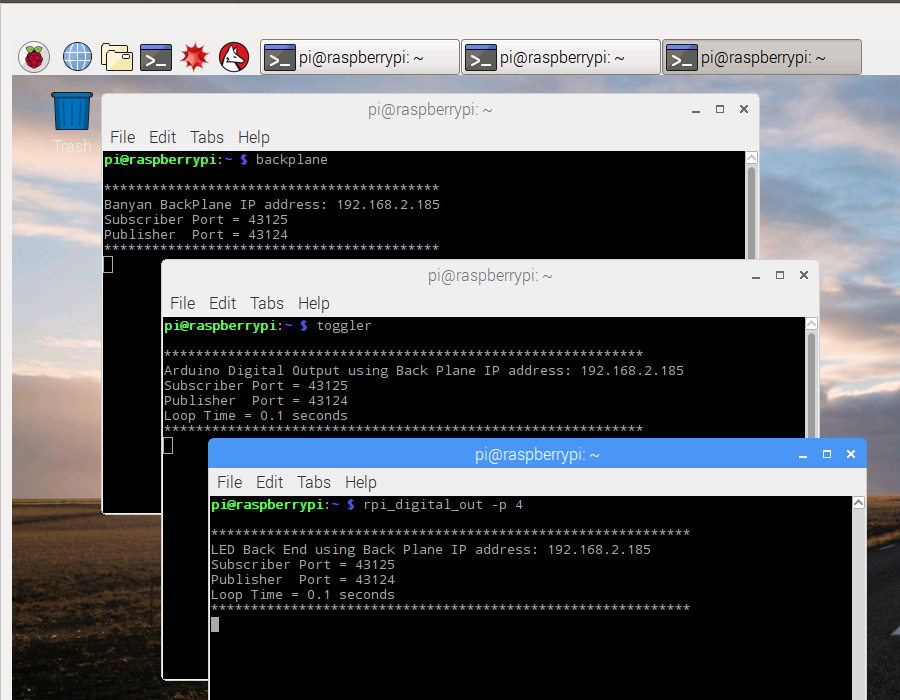
Now let's start the tick_counter on the OBRevenge machine using the -b option:
tick_counter -b 192.168.2.185
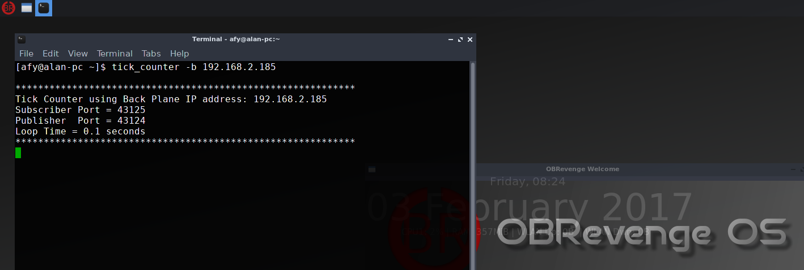
On to the Ubuntu computer where will start the tick_generator and the arduino_digital_out components:
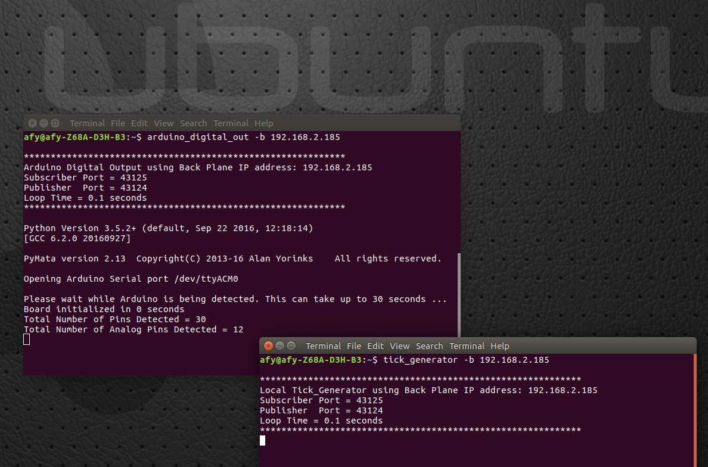
And finally we start the clock_gui and monitor components on the Windows 10 machine. The clock_gui does not use argparse and so its command line argument to set backplane address simply follows the command:
clock_gui 192.168.2.185
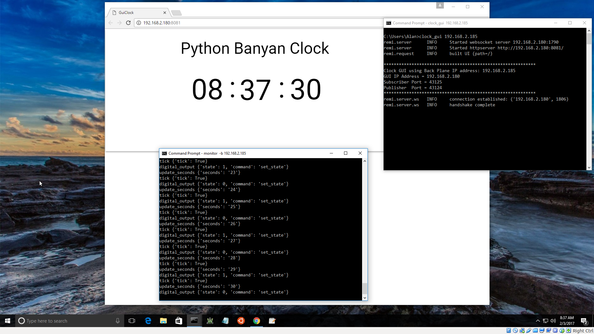
And there you have it. All the components have been distributed and are running without a single line of code needing to be changed.
CHAPTER 3: ADDING AN I2C BASED BCD TIME DISPLAY

Before moving on to the next topic, let's review what we have accomplished so far. We've created an application consisting of 2 independent features that execute concurrently within a single application. Each feature is constructed as a set of Python Banyan components, and some of these components are being shared and simultaneously used by both features.
Here is a table summarizing these features and the components used to implement each one:
| Feature | Component |
|---|---|
| Web Clock | clock_generator |
| tick_counter | |
| clock_gui | |
| Pin Toggler | clock_generator |
| tick_counter | |
| toggler | |
| rpi_digital_out | |
| arduino_digital_out |
Now, let's continue on with our "clock" theme by attaching an Adafruit Bicolor LED Square Pixel Matrix to the i2c pins of the Raspberry Pi, and using the display as a BCD clock display.
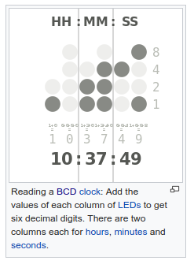
The time being displayed in the photo at the top of this chapter is 14:12:24. The green LEDs represent a "1" and red
LEDs
represent a "0".
The High Level Component Design
Component 1: binary_clock.py.
The highest level component for the BCD clock is called binary_clock.py and it is an abstraction of the BCD display configured as a BCD display.
This component subscribes to update_hours, update_minutes and update_seconds messages, and then translates those messages into commands for the underlying i2c device, (HTK1633), to control the individual pixels to display the time in BCD format. It publishes messages containing a topic of "8x8_matrix" for each pixel to be modified for the updated unit. The payload for these messages is:
{'command': 'set_pixel', 'x': row, 'y': column, 'value': RED | GREEN}
When all of the pixels for the time unit have been published, it then publishes a message to display the updated pixels:
{'command': 'output_display_buffer'}
The code adheres to the standard Python Banyan patterns already covered in previous sections, and the code itself is well commented, so it needs no further discussion.
Component 2: i2c_htk1633.py
This component provide an abstraction for the HTK1633 16x8 LED i2c Controller Driver. For reference, the data sheet for the HTK1633 may be found here.
This component utilizes the standard Python Banyan design patterns, but introduces the use of the i2c device descriptor. This section will describe that descriptor and it usage.
# i2c commands for the htk1633
# the values will be filled in by the methods for each command
self.i2c_device = {
"htk1633": {
"commands": {
"init": [
{
u"command": u"init",
u"device_address": self.device_address
}
],
"set_oscillator_state": [
{
u"command": u"write_byte",
u"device_address": self.device_address,
u"value": self.OSCILLATOR_OFF
}
],
"set_blink_rate": [
{
u"command": u"write_byte",
u"device_address": self.device_address,
u"value": self.HT16K33_BLINK_CMD
}
],
"set_brightness": [
{
u"command": u"write_byte",
u"device_address": self.device_address,
u"value": self.HT16K33_BRIGHTNESS_CMD
}
],
"write_pixel": [
{
u"command": u"write_byte_data",
u"device_address": self.device_address,
u"value": 0
}
]
}
}
}
An i2c device descriptor, as shown for the HTK1633 above, describes the operations that may be performed on behalf of the i2c device. Each operation is considered to be a macro command. A macro command contains one or more i2c communication messages that will implement the macro command.
A communication message is essentially an i2c read or write instruction with its optional parameters.
To understand how this works, let's look at the device initialization method:
def initialize_i2c_device(self):
"""
This method establishes the i2c address of the device on the MCU.
:return:
"""
msg = self.i2c_device['htk1633']['commands']['init']
self.publish_payload(msg, self.publisher_topic)
A command execution method, such as initialize_i2c_device, dereferences the i2c device descriptor to retrieve the message or messages that will ultimately execute the command.
For the initialize command, the following payload is published with a topic of 'i2c_8x8_matrix':
{
u"command": u"init",
u"device_address": self.device_address
}
In addition to the HTK1633 device, there are components provided that support the PCF8591 Analog To Digital Converter and the and ADXL345 Accelerometer.
Each i2c device implements a unique Python Banyan component to support the device.
The ADXL345 component has an i2c device descriptor with an example of multiple i2c communication messages for its init macro command. Here is the entire descriptor containing an init and a read macro command:
# this is python_banyan descriptor for the i2c commands to be sent to the i2c target device
self.i2c_device = {
"adxl345": {
"commands": {
"init": [
{
u"command": u"init",
u"device_address": device_address
},
{
u"command": u"write_byte_data",
u"device_address": device_address,
u"register": 45,
u"value": 0
}, {
u"command": u"write_byte_data",
u"device_address": device_address,
u"register": 45,
u"value": 8
}, {
u"command": u"write_byte_data",
u"device_address": device_address,
u"register": 49,
u"value": 8
},
{
u"command": u"write_byte_data",
u"device_address": device_address,
u"register": 49,
u"value": 3
}
],
"read": [{
u"command": "read_block",
u"device_address": device_address,
u"num_bytes": 6,
u"register": 50,
u"report": True,
u"tag": 0
}]
}
}
}
Component 3: i2c_pigpio.py
This component adheres to the Python Banyan patterns covered in the past.
There is a single instance of i2c_pigpio that receives all 'i2c' message from the device specific i2c components. This component communicates directly with the i2c device via the SDA/SCL pins to perform i2c reads and writes. A read command can optionally return a value. The reason that this is optional is that sometimes a read is used to increment an internal pointer within the device and not to retrieve a data value.
Running The BCD Clock Display
To run the BCD clock, make sure the clock components of chapter 1 are already running, and then run i2c_pigpio.py, i2c_htk1633.py and binary_clock.py
CHAPTER 4: INSTALLING YOUR COMPONENTS AS EXECUTABLE MODULES
If you would like to install your Python Banyan components as executable modules that are found on the execution pah, you may use a feature of the standard setup.py module. Full documentation for setup.py may be found here.
You would first need to add you package to the packages list in setup.py. Next you need to make an entry into entry_points/console scripts section.
The format for this section is:
"name_of_executable = module.with:function_to_execute"
from setuptools import setup
setup(
name='python-banyan-examples',
version='1.0',
packages=[
'python_banyan.examples.clock',
'python_banyan.examples.digital_toggling',
'python_banyan.examples.launching',
'python_banyan.examples.matrix',
'python_banyan.examples.raspberry_redbot.i2c',
'python_banyan.examples.raspberry_redbot.i2c.validators',
'python_banyan.examples.raspberry_redbot.i2c.accelerometers',
'python_banyan.examples.raspberry_redbot.i2c.a2d',
'python_banyan.examples.raspberry_redbot.encoders.validators',
'python_banyan.examples.raspberry_redbot.led',
'python_banyan.examples.raspberry_redbot.led.validators',
'python_banyan.examples.raspberry_redbot.buzzer.validators',
'python_banyan.examples.raspberry_redbot.led.validators',
'python_banyan.examples.raspberry_redbot.buzzer',
'python_banyan.examples.raspberry_redbot.buzzer.validators',
'python_banyan.examples.raspberry_redbot.motors',
'python_banyan.examples.raspberry_redbot.motors.validators',
'python_banyan.examples.raspberry_redbot.encoders',
'python_banyan.examples.raspberry_redbot.switches',
'python_banyan.examples.raspberry_redbot.gui',
'python_banyan.examples.raspberry_redbot.i2c.led_matrix',
],
install_requires=[
'python_banyan',
'pyzmq',
'u-msgpack-python',
'PyMata'
],
package_data={'python_banyan.examples.launching': ['*.txt']},
entry_points={
'console_scripts': [
'clock_gui = python_banyan.examples.clock.clock_gui:clock_gui',
'tick_counter = python_banyan.examples.clock.tick_counter:tick_counter',
'tick_generator = python_banyan.examples.clock.tick_generator:tick_generator',
'binary_clock = python_banyan.examples.clock.binary_clock:binary_clock',
'rpi_digital_out=python_banyan.examples.digital_toggling.rpi_digital_out:rpi_digital_out',
'toggler=python_banyan.examples.digital_toggling.toggler:toggler',
'arduino_digital_out=python_banyan.examples.digital_toggling.arduino_digital_out:arduino_digital_out',
'lunch_config=python_banyan.examples.launching.lunch_config:lunch_config',
'i2c_htk1633 = python_banyan.examples.matrix.i2c_htk1633:i2c_htk1633',
'i2c_pigpio = python_banyan.examples.raspberry_redbot.i2c.i2c_pigpio:i2c_pigpio',
'buzzer_pigpio = python_banyan.examples.raspberry_redbot.buzzer.buzzer_pigpio:buzzer_pigpio',
'encoders_pigpio = python_banyan.examples.raspberry_redbot.encoders.encoders_pigpio:encoders_pigpio',
'i2c_pcf8591 = python_banyan.examples.raspberry_redbot.i2c.a2d.i2c_pcf8591:i2c_pcf8591',
'i2c_adxl345 = python_banyan.examples.raspberry_redbot.i2c.accelerometers.i2c_adxl345:i2c_adxl345',
'led = python_banyan.examples.raspberry_redbot.led.led:led',
'led_pigpio = python_banyan.examples.raspberry_redbot.led.led_pigpio:led_pigpio',
'motors = python_banyan.examples.raspberry_redbot.motors.motors:motors',
'motors_pigpio = python_banyan.examples.raspberry_redbot.motors.motors_pigpio:motors_pigpio',
'switches_gpio = python_banyan.examples.raspberry_redbot.switches.switches_pigpio:switches_pigpio',
'redbot = python_banyan.examples.raspberry_redbot.gui.redbot_controller:redbot_gui',
]
},
)
When you run pip or setup.py, your module will be placed on the executable path independent of operating system.
SOFTWARE REQUIRED BY PYTHON BANYAN
The examples presented here were tested using Python 3.4.2 on a Raspberry Pi, Python 3.5.2 on Ubuntu Linux, and Python 3.6 on Windows. There are no known Python 3 dependencies in the Framework.
Python Banyan runs on Windows, Linux, and Mac, however you may need to install some additional software to your computer to meet the needs of Python Banyan. Here is a list of items that must available for Python Banyan to run:
-
Python 3
The examples in this manual have been tested using Python 3.4.2, Python 3.5 and Python 3.6. Python Banyan is not inherently Python 3 specific so you are free to try it with Python 2 if you wish. -
ZeroMQ
ZeroMQ is a networking library that is at the heart of Python Banyan. It acts as a non-blocking asynchronous transport for Python Banyan applications. It also allows a Python Banyan application to distribute its components across multiple computers. The examples in this manual will demonstrate how to run an application on a single computer, and how to take that same application and run its components on multiple computers.
In addition, ZeroMQ allows components written in languages other than Python to interact and become part your application. An example of integrating a JavaScript component will be discussed.
Also, ZeroMQ helps form a Python Banyan "backplane". You may plug in or remove components of your application while the other components are already running. This too will be demonstrated. -
The Python Banyan Distribution
This includes Python Banyan's base class, used to create Python Banyan compatible applications, the Python Banyan backplane, an executable Python module, and a utility module called the "monitor", that will allow you to view traffic on the backplane. -
Optional Packages
-
The Lunch Launcher
The Lunch launcher is not required, but provides a managed way to launch a Python Banyan application. Lunch is only available for Linux systems. For Windows, a batch script (.bat) can be created. For Mac a shell script can be created (.sh). -
The remi GUI Library
This package is not required, but is used in conjunction with the Clock demo described in this guide.
-